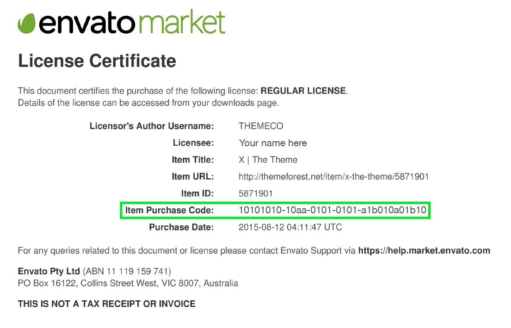
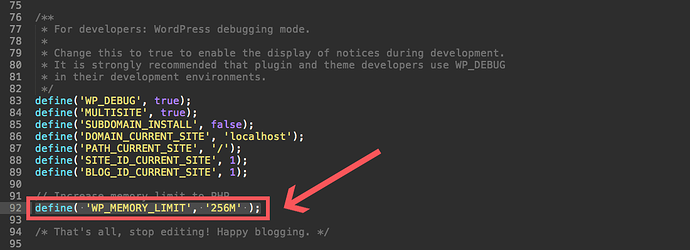
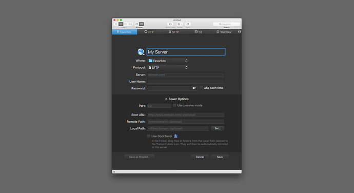
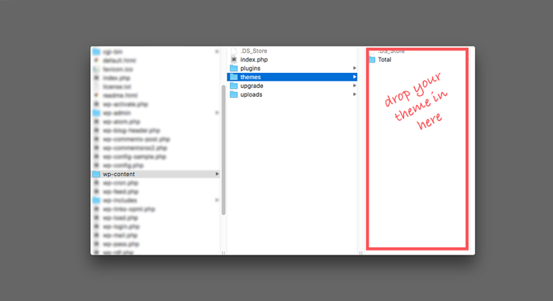
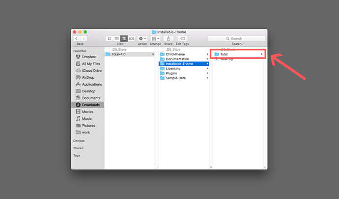

The Photosy theme is designed to work under WordPress environment. Before we jump to the theme presentation we would like to provide some resources intended for users who are new to WordPress but it may also be useful for the more experienced users.
WordPress presentation:
WordPress Codex information:
- Installation – WordPress is easy to install
- Pages vs. posts – Understand the differences between posts and pages
- Posts – The articles/posts represent the content
- Manage categories – Structure your content using categories
- Tags – Group posts which have similar content
- Pages – They have multiple usage from homepage to contact, from blog page to presentation pages, etc.
WordPress Video tutorials:
Other resources:
Requriments for Photosy
In this section we will present the recommended configuration under which the theme would work perfectly. Those are not absolute values, the theme performance depends on many factors like the host performance, server configuration and the number of visitors.
Serve Requriments
- WordPress 4.0 or later
- Apache or Nginx
- php.ini memory limit: 40MB (recommended: 64M)
- PHP version 5.2.4 or greater (recommended: PHP 5.4 or greater)
- MySQL version 5.0 or greater (recommended: MySQL 5.5 or greater)
- The mod_rewrite Apache module (optional)
What's included in Photosy theme package
When you download the theme from your account on themeforest.net you can choose to download the entire package or just the theme. The theme package is a zip file which contains following structure:
- child-theme – the child theme files are located in the /code folder
- documentation – theme general info and a link to this documentation
- licensing – general license information
- social-jumbo-kit – premium social jumbo kit bonous pack
- plugins – we included all of our addons plugins as well as premium plugins
- photosy.zip – the WordPress theme
- changelog.txt – a list with the modifications made in each update
How to activate theme
This activation enables all features of the theme (i.e. Demo import etc.). This step is taken for mass piracy of our theme, and to serve our paying customers better. To activate theme you need to put purchase code:
How to get purchase code
- Log into your Envato Market account.
- Hover the mouse over your username at the top of the screen.
- Click ‘Downloads’ from the drop down menu.`
- Click ‘License certificate & purchase code’ (available as PDF or text file).
Here is an example of a PDF License certificate and purchase code:

Thank you for choosing Photosy! Excited about starting your new website? Let’s get started.
Install your theme through WordPress
You’ll need to download the theme file before you try and install it. Simply log into your account, go to your downloads and locate your theme. Click on the download button and select the “Installable WordPress file only”. This will download the zip file for your theme.
Common error: Downloading the wrong theme zip file
Make absolutely, positively sure you select the “Installable WordPress file only” option. If you select “All files & documentation” by mistake, you will not be able to install this zip as is. Instead unzip the file and then locate the installable theme file within it. Luckily most developers clearly label their files, so it should be pretty easy to find.
Common error: Zip file won’t download
It’s possible that you have your computer setup to automatically unzip files when you download them. You cannot install a regular folder in WordPress. If this is the case remember to right click and “Compress” your theme before moving onto the next step and installing it.
Log into your WordPress installation and before you do anything else make sure WordPress is up to date. Okay – this might not effect the installation of your WordPress theme but it’s a crucial security step. You always, always, always want to keep WordPress up to date.
Now that you’re sure you’re running the latest version of WordPress, navigate to Appearance > Themes and click the “Add New” button at the top of the window. Then click the “Upload Theme” button.
Click the “Browse…” button and select the zip file you previously downloaded. Click “Install Now” and then wait a minute while WordPress works its magic. Once the theme files have been completely uploaded just click the “Activate” button.
Common error: Stylesheet is missing
If after clicking “Install Now” you see an error that “The package could not be installed. The theme is missing the style.css stylesheet,” then you probably didn’t follow our instructions from step 1. You more than likely downloaded the “All files & Documentation” instead of the the installable theme. Go back and double check that you’ve downloaded the correct file.
Common error: Are you sure you want to do this?
After browsing for your theme and clicking the “Install Now” button, it’s possible your WordPress installation will ask “Are you sure you want to do this?” This could be due to the fact that you are trying to install the wrong zip file (remember – you want the “Installable WordPress file only”) or it’s possible the upload limit on your server isn’t large enough.
If it’s the latter, you’ll need to contact your hosting company to have them increase it, or do it yourself by accessing your PHP.INI file via FTP and increasing the upload_max_filesize value.
Common error: White screen

f you attempt to install your theme, and end up on a white screen of death (you know, the WordPress version of the Windows blue screen of death) you probably need to make a tweak to your server. The most common cause of this error is that your server’s memory limit to PHP is too low. To solve this:
Contact your hosting provider to have them increase your memory limit.
Install your theme via FTP/SFTP
If you’d prefer to install your theme via FTP/SFTP you can. It’s still super easy, there are just couple important steps you don’t want to miss.
First, you need to install a FTP (file transfer protocol) solution – we like FileZilla. Once you’ve got it installed, open up your app to connect to your server. You will also need to be logged into your hosting account to gather the following information:

- Name: Give your server a nickname that you’ll remember (especially if you plan on connecting to multiple sites).
- Where: Choose a location for your server (favorites just happens to be my default FTP/SFTP folder).
- Protocol: This will depend on which options your host provides for you to connect to your server. Go to your hosting account and locate your FTP/SFTP settings. This will vary based on your host (WP Engine’s can be found on your installs overview page, GoDaddy’s is in the SSH & SFTP tab for site Settings) so you may have to poke around a bit. Select the option that your host offers.
- Server: Enter your domain name (the server url address) here.
- Username & Password: This will either be provide by your host in the FTP/SFTP settings or you’ll have the option to create your own new ones. Copy and paste them over.
- Port: Be sure you’re set to use the same port as specified by your host – you may not need to change this.
Once you’ve added all your info save your server, then click to open it and browse to your wp-content/themesfolder.
Next you’ll need to download your WordPress theme which we covered in detail up above in the “installing your WordPress theme via WordPress” section. Please make sure you’re downloading the “Installable WordPress file only.”
With FTP/SFTP you’ll need to unzip the that file you just downloaded from Themeforest (it should look like an open folder icon). Then upload the extracted theme file.

Now log into your WordPress installation and navigate to Appearance > Themes and click to activate your theme. See – not too hard, right?
Common error: Wrong theme file/folder

When installing via FTP, it’s very important to be sure you upload only the theme file onto your server. A zipped file won’t work this time! Check that you’ve remembered to unzip your download. And, also double check that you’re uploading the correct theme only folder. You may have accidentally downloaded the theme plus docs and anything else.
{kind=link}
{kind=link}
{kind=link}
{kind=link}
{kind=link}